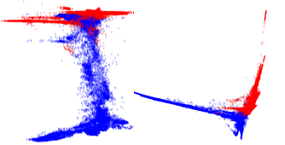
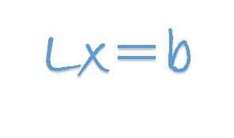
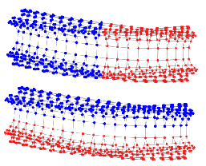
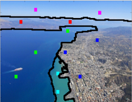

Software Projects

SpecPart is a supervised spectral framework for hypergraph partitioning solution improvement. SpecPart can leverage "hints" on the part membership of vertices. When provided as hints to SpecPart, partitioning solutions computed by other algorithms are often improved by SpecPart.
Code and best-known solutions for benchmarks: GitHub
SpecPart is a joint work with I. Bustany (AMD), A. Kahng, B. Pramanik, Z. Wang (UCSD)
Supported by NSF grants CCF-2039863, CCF-1813374 and Xilinx, AMD.

Combinatorial Multigrid is a preconditioner for diagonally dominant linear systems. CMG combines the strengths of multigrid with those of combinatorial preconditioning.
MATLAB implementation:
GitHub
Julia implementation (co-authored with Bodhisatta Pramanik):
GitHub
Supported by NSF grants CCF-1149048, CCF-1813374.

Spectral graph clustering is based on the connection between eigenvectors of the normalized graph Laplacian and low-conductance cuts in the graph. However, this connection is not always direct. It is often the case that the cut corresponding to the lowest graph eigenvectors is far from the optimal cut. The code, based on this NeurIPS paper, modifies the input graph in a way that approximately preserves its cluster structure, while forcing its lower eigenvectors to 'capture' a better cut.
MATLAB implementation (co-authored with Huong Le): GitHub
Supported by NSF grants CCF-1149048, CCF-1813374.

A spectral algorithm for clustering with constraints. Based on this article.
MATLAB implementation:
Download
Dependence: CMG solver
Supported by NSF grant CCF-1149048.

An implementation of the near-linear time algorithm by Spielman and Srivastava.
MATLAB implementation (authored by Richard Garcia Lebron):
Download
Dependence: CMG solver
Supported by NSF grant CCF-1149048.